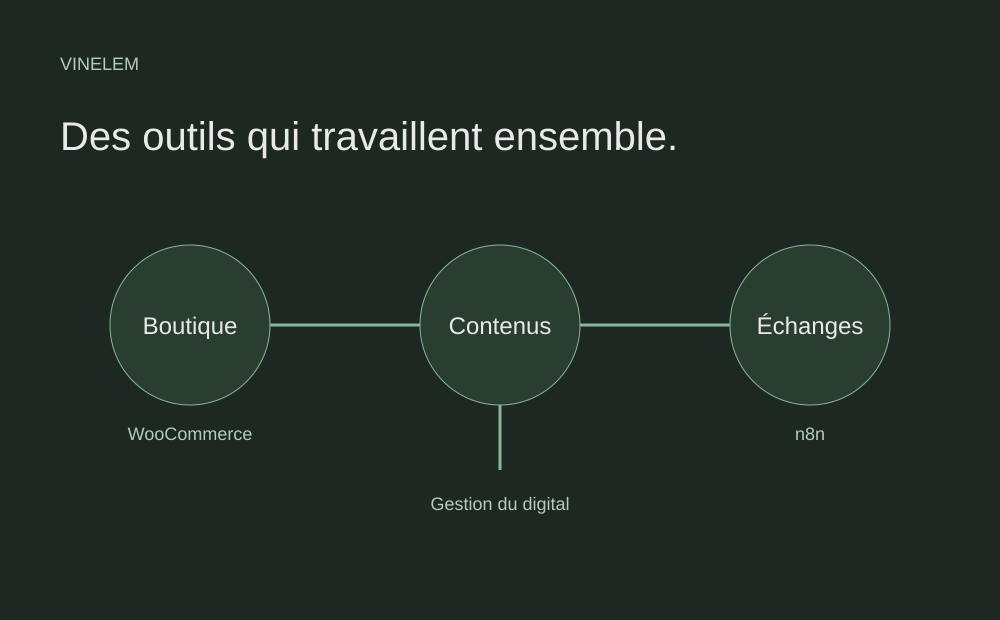

Entreprise familiale · Projet professionnel
Relier les outils, simplifier le travail.
Une boutique en ligne et l’automatisation des échanges liés aux collaborations marketing.

Entreprise familiale · Projet professionnel
Le besoin.
Mettre en place une boutique e-commerce et accompagner les collaborations marketing avec des outils adaptés à l’activité de l’entreprise familiale.
Ma contribution.
En tant que responsable digital, je gère le site e-commerce, les contenus numériques et l’automatisation des collaborations marketing.
- Configurer la boutique avec WordPress et WooCommerce.
- Gérer les contenus numériques liés à l’activité.
- Automatiser les échanges avec les influenceurs à l’aide de n8n.
Ce que j’en retiens.
Le développement peut aussi consister à configurer et relier des outils existants. L’intérêt de ce projet est de partir d’un besoin métier pour organiser le site et les échanges associés.
La suite.
Approfondir le suivi des automatisations et documenter les étapes pour rendre leur maintenance plus simple.